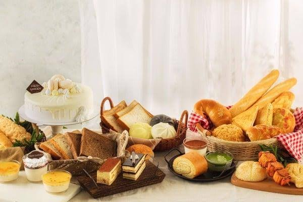
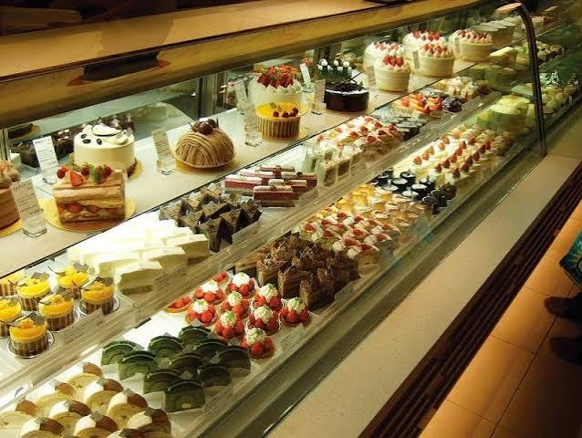
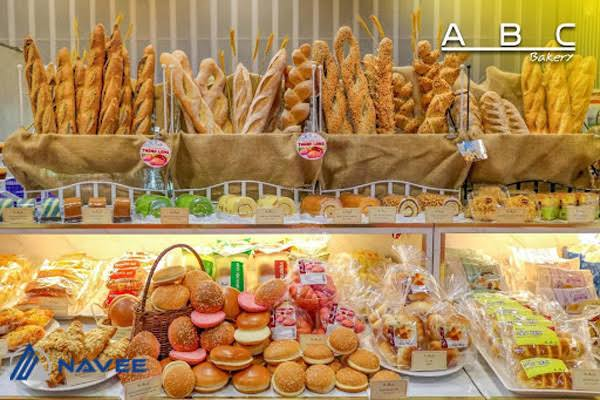
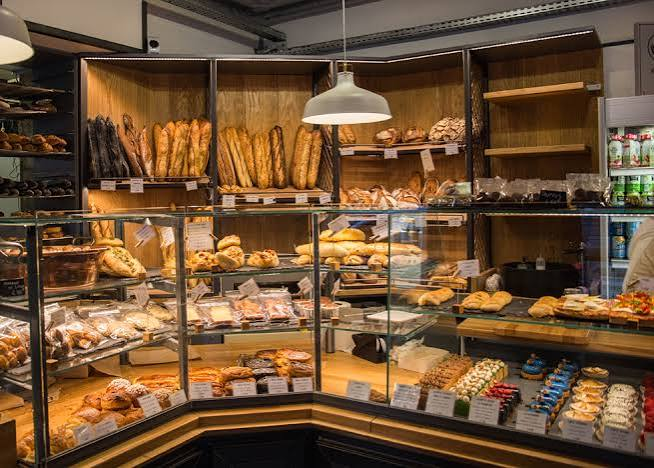

Giới thiệu
Câu chuyện thương hiệu
Thành lập vào tháng 10/2026 từ tình yêu với những chiếc bánh, Fresh Cake khởi nguồn cùng slogan “Bánh tươi mỗi ngày” và sứ mệnh xuyên suốt về mang tới những sản phẩm thơm ngon nhất. Những năm đầu, sản phẩm chủ lực của Fresh Cake là bánh kem và bánh mì tươi. Trong mỗi dịp lễ hay sinh nhật, bánh kem của Fresh Cake luôn là một trong những lựa chọn hàng đầu, bởi độ ngọt vừa phải, mẫu bánh đẹp, giá thành hợp lý. Bên cạnh đó, đồng hành mỗi ngày của khách hàng là các sản phẩm bánh mì tươi dinh dưỡng, thơm ngon.

Dấu ấn hành trình
Với hơn 100 cửa hàng và đại lý phân phối phủ khắp các tỉnh phía Bắc, Fresh Cake tự hào là thương hiệu bánh tươi uy tín bậc nhất với dây chuyền sản xuất tiên tiến hiện đại cùng gần 1000 nhân sự làm việc chăm chỉ không ngừng sáng tạo. Với tín đồ của bánh ngọt, mặn, bánh kem thì thật sự Fresh Cake chính là một "thế giới thu nhỏ" của bánh trái, chiều lòng bất kì vị khách nào ghé ngang. Trải qua một thập kỷ với những cung bậc sáng tạo, Fresh Cake không chỉ ghi dấu bởi chất lượng mà còn vì sự tinh tế trong từng nấc hương vị, đa dạng bánh Âu, Á và dần trở thành thói quen trong văn hóa tiêu dùng của những tín đồ yêu bánh.
Thế mạnh của Fresh Cake nằm ở những dòng bánh kem tươi mềm mịn ngọt dịu tươi mới, bánh mì nướng đặc biệt giòn thơm, bánh cuộn chuẩn Nhật với lớp kem sữa Hokkaido… rất được ưa chuộng. Trong mỗi dịp lễ hay sinh nhật, bánh kem của Fresh Cake luôn là một lựa chọn hàng đầu, bởi độ ngọt vừa phải, mẫu bánh đẹp, giá thành hợp lý. Bên cạnh đó, đồng hành với khách hàng mỗi ngày là các sản phẩm bánh mì tươi – bánh mỳ kẹp tiện lợi, dinh dưỡng.

Sứ mệnh và tầm nhìn
Đằng sau Fresh Cake là đội ngũ nhân viên, chuyên gia đầu bếp luôn nỗ lực sáng tạo, không ngừng đam mê để có thể đưa ra những sản phẩm ngon, chất lượng, đẹp mắt và an toàn cho sức khỏe khách hàng. Đi cùng quy trình làm bánh nghiêm ngặt, khép kín, đòi hỏi nhân viên phải cẩn thận, tỉ mỉ và chăm chút trong từng công đoạn nhỏ nhất. Fresh Cake cam kết mang đến những sản phẩm đạt chất lượng cao nhất như một lời tri ân đối với sự yêu mến và tin dùng.

Những giá trị tạo nên Fresh Cake
Từng sản phẩm Fresh Cake được đầu tư rất kỹ ngay từ khâu chọn nguyên liệu, đó là những thành phần tươi mới nhất và chủ yếu đang sử dụng đều đến từ những nhãn hiệu có uy tín như Anchor, Vivo, Meiji, Komplet… Một số dòng sốt của Ý như sốt pizza, sốt mayonaise cũng được nhập trực tiếp từ Ý.
Đến với Fresh Cake là đến với hàng trăm hương, vị bánh đa chủng loại Á – Âu: bánh ngọt, bánh mì tươi, các dòng bánh kem sinh nhật, sự kiện, theo mùa… Các loại bánh luôn được chú trọng sản xuất sao cho đảm bảo hương vị thơm ngon tuyệt vời mà còn an toàn, đảm bảo cho sức khoẻ. Mỗi chiếc bánh ra đời là đam mê của một tập thể tâm huyết với nghề, mỗi sẩn phẩm trao tay là tận tâm của đội ngũ nhân viên với khách hàng.Tất cả những điều đó, bạn sẽ cảm nhận được khi thưởng thức từng dòng bánh tuyệt hảo – ý nghĩa – tiện lợi mà Fresh Cake đặc biệt tạo nên.
